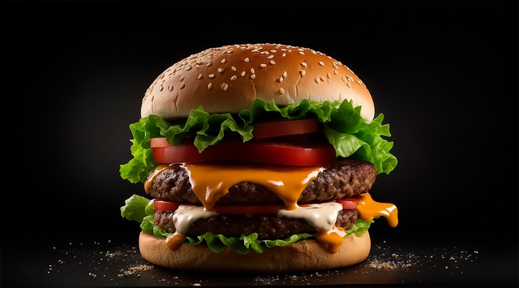

Burger

Introducing the ultimate burger experience – a tantalizing symphony of
flavor and freshness that will leave your taste buds dancing with delight.
Our signature burger starts with a juicy, flame-grilled beef patty, cooked
to perfection and nestled between two lightly toasted brioche buns. But
that's just the beginning.
Ingredients
- Bun
- Veg Patty
- Lettuce
- Cheese Slice
Steps to Make the Dish
-
Quality Ingredients: Start with the freshest
ingredients possible. From the beef patties to the lettuce and tomatoes,
using high-quality, fresh ingredients is essential for a delicious
burger.
-
Seasoning: Don't skimp on seasoning. Whether it's just
salt and pepper or a secret blend of spices, seasoning the burger
patties well adds depth of flavor and enhances the taste of the meat.
-
Cooking Technique: Perfect the cooking technique.
Whether you're grilling, frying, or even baking your burgers, ensuring
they're cooked just right – juicy and flavorful, with a nice char or
crust – is
-
Layering: Pay attention to the order of ingredients.
Layering is key to a well-balanced burger. Start with a sturdy base like
the bottom bun, followed by the patty, cheese, toppings, sauce, and
finally the top bun. This ensures that every bite has a bit of
everything.
-
Customization: Offer options for customization.
Everyone has their own preferences when it comes to toppings and
condiments. Providing a variety of options allows customers to tailor
their burger to their liking, ensuring satisfaction with every bite.